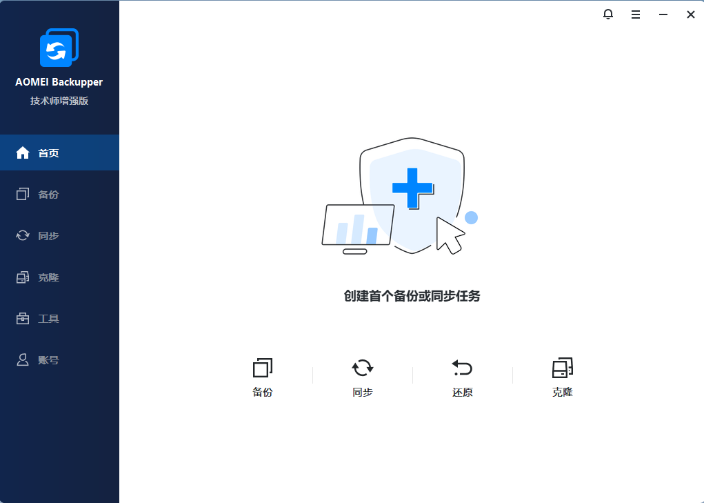
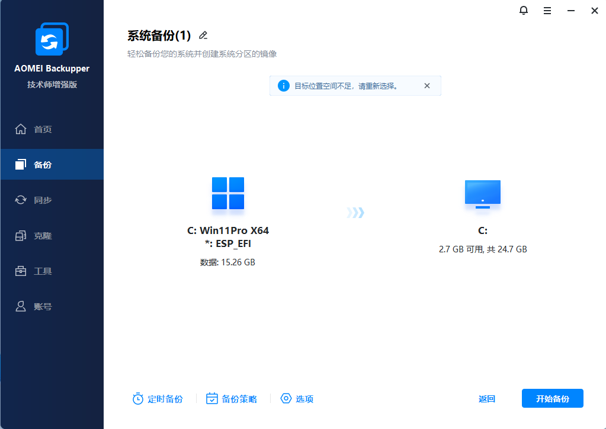
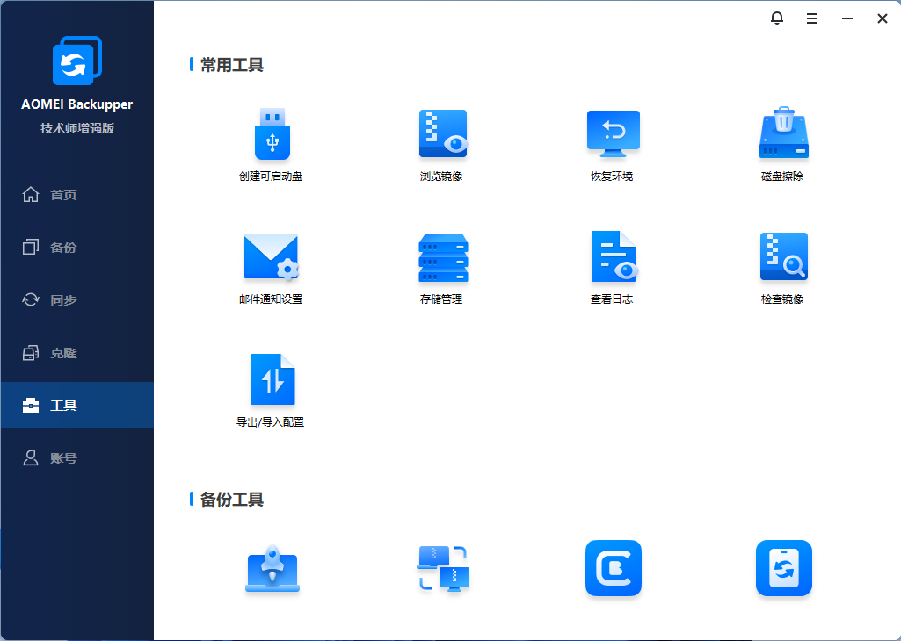
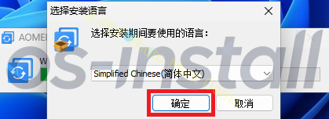
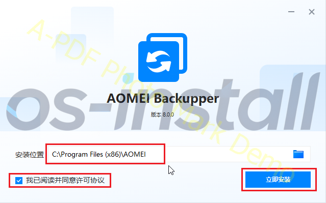
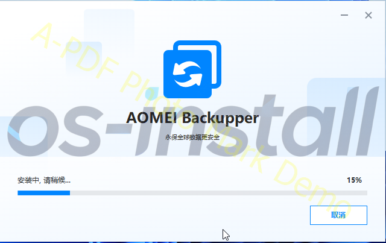
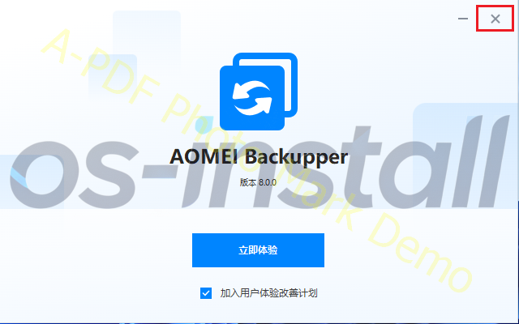

AOMEI Backupper(傲梅轻松备份)
v8.0.0 技术师增强版提供极速系统、磁盘备份与一键还原，操作简便，可替代GHOST等工具。
软件截图




软件介绍
AOMEI Backupper（傲梅轻松备份）是一款专业的数据备份与还原软件，由傲梅公司推出。它以极快的备份速度为核心优势，旨在简化系统、磁盘及文件的备份流程，让用户无需复杂操作即可轻松实现一键备份与还原，有效避免重装系统的麻烦，并支持将整个硬盘或指定数据完整备份。
主要特点
全面的备份功能
支持系统、整个磁盘/分区以及特定文件或文件夹的备份与还原。
高效的备份技术
提供增量与差异备份，仅备份变化的数据，大幅提升速度并节省存储空间。
灵活的定时任务
可设置按每天、每周、每月等周期自动执行备份任务。
便捷的一键操作
系统备份与还原过程简单，通过几次点击即可完成，无需使用Ghost等复杂工具。
智能通知机制
备份完成后，可通过电子邮件发送日志报告，方便用户及时了解备份状态。
适用场景
适用于个人用户系统备份、企业数据保护、IT技术人员系统部署、重要文件定期备份等场景。无论是家庭用户还是企业用户，都能通过AOMEI Backupper轻松实现数据安全保护。
系统要求
操作系统
Windows XP / Vista / 7 / 8 / 8.1 / 10 / 11
处理器
500 MHz 或更快的 x86 兼容处理器
内存
至少 256MB
存储空间
约60MB至137MB+
安装步骤
1
下载安装包
点击网站底部的下载按钮，下载AOMEI Backupper安装包。
2
运行安装程序
下载完成后，解压缩下载的文件，双击安装文件"AOMEI_Backupper_8.0.0.exe"开始安装过程。Windows可能会显示用户账户控制提示，请点击"是"继续。
3
安装过程操作
按照图示操作，完成软件的安装过程（安装路径可自定义）。




安装注意事项
- 安装前请确保您的系统满足最低要求
- 安装过程中请关闭其他可能冲突的安全软件